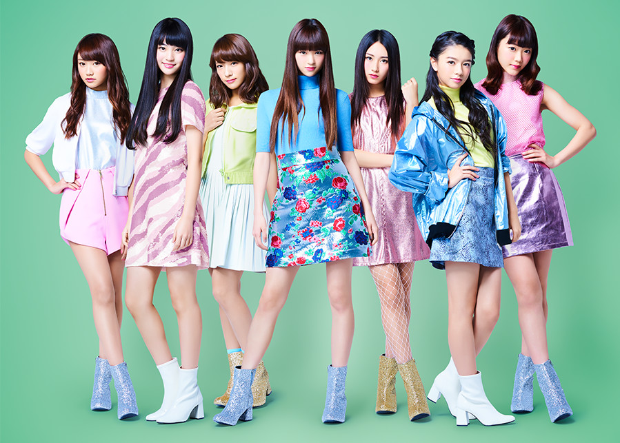

Questyデビュー曲FANTASY 特設サイト
start
1
skip
skip song
QUESTY

marin
Date of Birth: 1998/9/6 From: 神奈川 Blood Type: A
hinano
Date of Birth: 1998/12/10 From: 兵庫 Blood Type: O
rena
Date of Birth: 2000/5/24 From: 大阪 Blood Type: A
fuka
Date of Birth: 2001/5/16 From: 茨城 Blood Type: A
maria
Date of Birth: 2001/12/31 From: 秋田 Blood Type: O
haruna
Date of Birth: 1999/9/5 From: 神奈川 Blood Type: A
rion
Date of Birth: 2002/9/29 From: 大阪 Blood Type: A
ディレクター
本郷 伸明（EPOCH）
テクニカル・ディレクター
天野 清之（KAYAC）
クリエイティブ・ディレクター
針谷 建二郎（THINKR）
Fantasy
映画「ポッピンQ」主題歌
hoge
moge
foo bar
avex group
ポッピンQ
公式Twitter
Share
Tweet
もう一度再生
Questy「FANTASY」
このコンテンツをご覧いただくには
iosはSafariで、AndroidはChromeで
開き直して下さい
http://questy-fantasy.jp/
Questy / Fantasy
http://questy-fantasy.jp/
公式フルミュージックビデオ
Youtube
Share
Tweet
Fantasy
映画「ポッピンQ」主題歌
hoge
moge
foo bar
avex group
ポッピンQ
公式Twitter